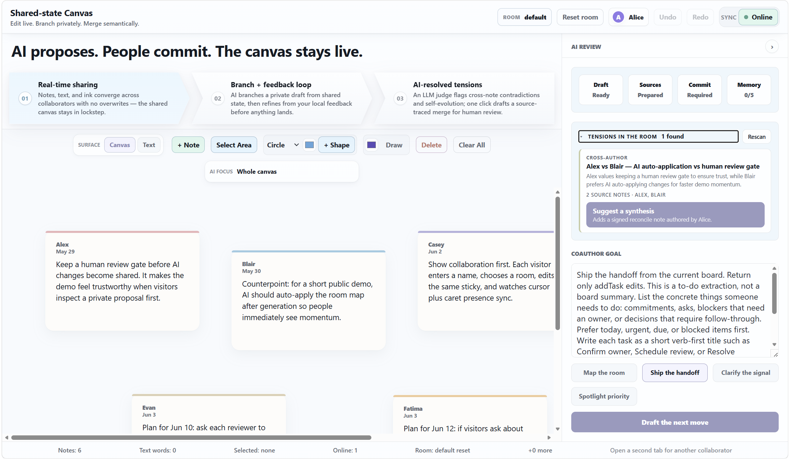
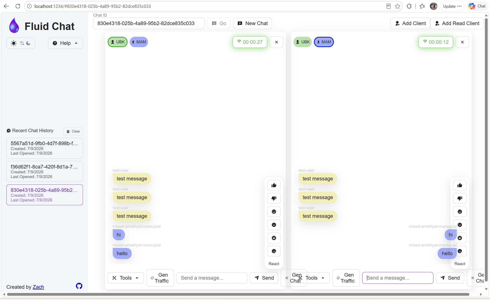
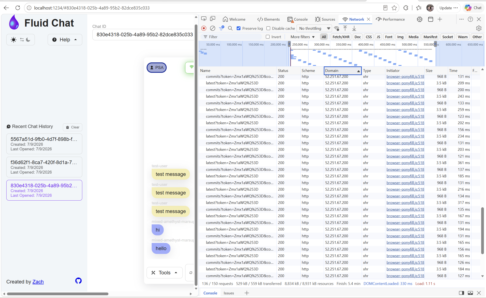

Gin Fu
CS master's student, based in the Bay Area.
This summer I came up to Redmond for Seattle's best season.
.jpg)
.jpg)
.jpg)
.jpg)
Two projects, one throughline.
Project 1 asks whether Fluid deserves to stay. Project 2 makes sure the customers who bet on it keep running when Azure Fluid Relay retires.
Project 1: Fluid Framework research & prototype
If Fluid didn't exist today — would we still build it?
Reframe: Should Fluid v2 / SharedTree stay the default for AI collaborative experiences, or should Microsoft seriously consider an external framework?

AI didn't just join the chat.
It joined the document.
The collaboration foundation defines the boundary of what AI can safely edit, what humans can trust, and how artifacts can persist across products.
How to compare fairly.
Mechanism value
How good is the core sync engine
The replacement bar
Identity · storage · compliance — platform integration Fluid gives you
Is any framework enough better to justify rebuilding everything underneath it?
Other frameworks each win one lane.
SharedTree is built for the whole road.
| Engine | Wins (one lane) | Why that's too narrow to switch |
|---|---|---|
| Yjs | Collaborative text & editor ecosystem | Also needs typed objects, review state, AI-addressable nodes |
| Automerge | History & merge across clients | No typed tree / schema / constraints for reviewable AI edits |
| Loro | Move & delete conflict handling | One dimension, not the whole scenario |
| Liveblocks | Packaging, presence, DX | Faster packaging is not a stronger mechanism |
| SharedTree (Fluid) | The whole loop | Native fit — service ordering, optimistic local edits, transactions, schema, and structured state form a coherent model for governed artifacts |
External frameworks can offer real-time sync. Only Fluid can build the trust.
This is what makes collaboration trustworthy inside Microsoft products — not just merging edits, but carrying data the product can govern and recover. That's where the replacement bar becomes real.
Across both layers — keep Fluid as the default.
No external mechanism edge I found is large enough to outweigh the Microsoft integration still to be built.
- On mechanism, its structured state is native.
- On platform, identity, storage, and compliance are already wired in.
From analysis to working evidence.
It runs on Azure App Service. Collaboration keeps an Automerge document in every browser and uses WebSocket only as a relay — so Automerge handles the merge and convergence locally.
Self-host Fluid solution
Azure Fluid Relay is retiring.
Third-party customers need a self-operated continuity path they can run themselves.
Scoped to a small set of existing customers — not a new platform.
Built to what a Fluid client needs.
Collaboration
Connect, operation ordering, real-time updates, presence, audience.
Persistence
Operations, checkpoints, snapshots, and cold-load.
Access & identity
Tenant, document, users, scopes, signing-key custody.
Operations & migration
Deploy, recover, upgrade — and move state off AFR.
What already ships isn't always the best fit.
A strong point of view is earned, not asserted. I built and ran all four, and let the data back my decision.
All passed — but different cost.
| Service shape | Fluid official E2E | Broker cost | Containers |
|---|---|---|---|
| Kafka + ZooKeeper | passed | 62% CPU · ~634 MiB | 15 |
| Full + Redpanda | passed | 4.9% CPU · ~289 MiB | 14 |
| Slim | passed | no broker | 8 |
| Tinylicious | passed | no broker | 1 |
Redpanda swaps in with no new code — 13× less average broker CPU, 33× less peak, 2.2× less memory, and one fewer container than Kafka + ZooKeeper.
Deployed locally and on Azure — tested with real clients.
It exercises the full path:


What I delivered — end to end.
| Lifecycle area | Final solution | Delivery state |
|---|---|---|
| Fluid service | Full Routerlicious, Redpanda broker | Validated — local + AKS |
| Operations & metadata | MongoDB: records, ops, checkpoints | Persistent storage |
| Durable storage | IFileSystemManager contract; Azure Files validated, others pluggable | Azure Files via cold-load; pluggable |
| Token & identity | Customer backend: auth + short-lived JWTs | Dev path validated; prod handed off |
| Local deploy | Docker Compose (amd64 + arm64) | Health + smoke verified |
| Azure deploy | ACR + AKS + Helm, PVCs, Azure Files | Validated with Fluid Chat |
| Migration | Freeze → recreate → validate → cutover | Latest-state done; cutover handed off |
| Maintenance | Pin, build, test, deploy, monitor, roll back | Operating model defined |